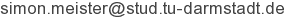
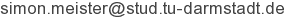

Simon Meister
Undergraduate Student
Department of Computer Science, TU Darmstadt


Undergraduate Student
Department of Computer Science, TU Darmstadt

I am currently completing a B.Sc. in Computer Science at TU Darmstadt.